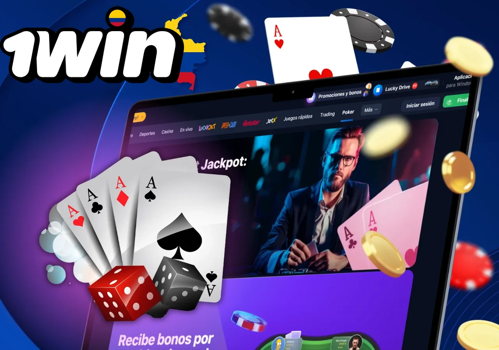
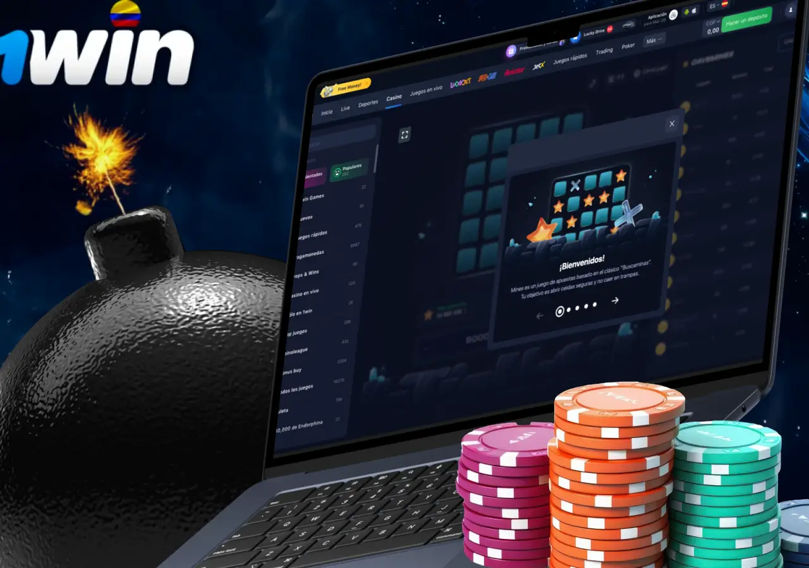
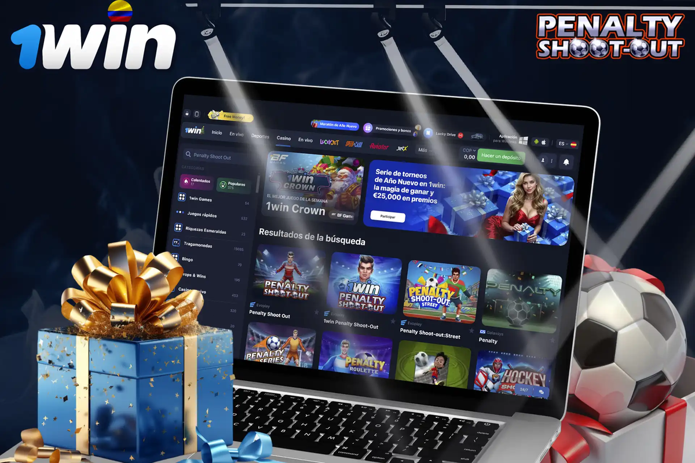

Is 1win legal in Argentina? Start with nuance
Is 1win legal in Argentina? The short honest answer is that legality depends on overlapping national rules, provincial regimes, and how an offshore or international operator is treated in practice. This article explains the questions adults should ask — it is not a lawyer opinion, court ruling, or permission slip.
Ready to explore is 1win legal in argentina on the official operator site? Review the live offer details before you deposit.
18+ only. Bonus wagering requirements, minimum deposit amounts, offer expiry windows, and game contribution rates vary — see operator T&Cs on the signup page before claiming any promotion. Gambling involves risk; never stake more than you can afford to lose.
National versus provincial layers
Argentina’s gambling landscape historically mixes federal considerations with strong provincial licensing for land-based and some online verticals. Residents in different provinces can face different practical realities. Always seek qualified local counsel if you need a definitive answer for your situation.
- Identify your province of residence before relying on generic blogs.
- Check whether a brand cites a licence relevant to your location.
- Distinguish advertising rules from player participation rules.
- Prefer primary legal texts or official gazettes over social media summaries.

| Question | Why it matters |
|---|---|
| Where is the operator licensed? | Consumer protection scope |
| Does my province restrict offshore play? | Local enforcement posture |
| Are there advertising limits? | How offers may appear |
| What dispute venue applies? | Complaint pathways |
Licensing disclosures and trust signals
International brands often hold licences from jurisdictions outside Argentina. A foreign licence can indicate regulatory oversight somewhere, yet it does not automatically equal a local Argentine online licence. Read footer disclosures on the official site and verify numbers on the issuing regulator’s register when possible.
- Copy the licence reference from the operator footer.
- Search the regulator register rather than trusting screenshots.
- Note the legal entity name — brands and companies can differ.
- Document dates; licences can lapse or change status.
KYC, age controls, and financial caution

Regardless of cross-border debates, responsible operators still run age and identity checks. Adults should expect document requests before larger withdrawals. Minors must never be facilitated into gambling accounts.
| Artefact | Purpose | Player tip |
|---|---|---|
| ID upload | Age & identity | Match account name |
| Proof of address | Residence checks | Recent documents |
| Payment proof | Anti-fraud | Same-name methods |
| Source of funds | Higher thresholds | Keep records private |
- 18+ only — no content here invites underage play.
- Tax treatment of gambling wins can be complex; consult a tax professional.
- Bank policies may flag certain merchant codes independently of criminal law.
Tax awareness without alarmism

Some players ask whether winnings must be declared. Rules depend on personal circumstances and current tax guidance. We do not provide tax advice. Keep your own records if you participate, and ask a licensed adviser for filings.
How to read restricted-territory clauses
When adults ask is 1win legal in Argentina, they often skip the operator’s own restricted-territory language. Those clauses can prohibit registration or demand that you do not circumvent geo controls. Ignoring them is unwise even if enforcement anecdotes online sound inconsistent. Contracts and local law are separate layers; both can matter.
Advertising seen on social platforms is not proof of local authorisation. Ads can target broadly. Screenshots of boosts do not equal a licence certificate. Always return to regulator registers and footer entity names.
Payment success is also not a legality verdict. Banks and payment processors apply their own merchant-category policies. A successful deposit means a payment went through, not that every legal question is settled for your province.
If you are a business considering affiliate promotions inside Argentina, different rules may apply to marketing versus personal play. This consumer-facing article does not cover commercial licensing for promoters. Seek specialised counsel for business activity.
Dispute resolution venues listed in operator terms may be abroad. That affects practical complaint leverage. Factor that into whether the entertainment value is worth the structural limitations.
Keep emotions out of legal interpretation. Fan forums escalate rumours after account closures that actually stem from bonus abuse detections or document mismatches. Read the closure reason carefully before assuming a constitutional crisis.
Document hygiene and privacy during checks
Upload KYC files through official portals only. Watermarking copies with date and purpose can reduce misuse if a file leaks, though you should still minimise distribution. Never post ID photos in Telegram groups claiming they can ‘speed verify’ accounts.
When a lawyer reviews your situation, bring operator terms PDFs, payment receipts, and a timeline. Vague oral histories waste billable hours. Our role stops at suggesting that preparation; representation is theirs.
Extended notes for legal readers
Additional context for the legal guide: adults reading from Argentina benefit from slow decision-making, written budgets, and a refusal to treat marketing banners as advice. Take ten quiet minutes before any deposit to list why you are opening the cashier at all.
Keep a simple ledger for a fortnight. Write dates, amounts, and product types. Patterns appear quickly — late-night crash games, salary-day spikes, or live football overreactions. Once visible, patterns are easier to change with deposit caps and app timers.
If a session stops being fun, end it without negotiating with yourself. Entertainment that requires a pep talk to continue is no longer entertainment. Use the responsible gambling block links when unease turns into distress.
Cross-read related hub pages instead of searching random screenshots. Internal articles on casino, app, login, bonuses, Aviator, Argentina context, and legality exist to answer different questions without repeating the same paragraph everywhere.
Finally, remember affiliate disclosures: sponsored links may earn this site a commission. That commercial fact does not change maths, law, or your household budget. Your constraints stay yours.
Revisit these reminders monthly. Habits drift. A calendar note labelled ‘budget review’ is a small tool with outsized value for anyone who wants play to remain optional and calm.
Practical checklist readers can save
Save this checklist somewhere offline: confirm official domain, set a deposit ceiling, enable stronger authentication where available, read wagering contribution rules before claiming promotions, and schedule a hard stop time. Tape the stop time next to your monitor if needed.
When travelling between provinces or abroad, re-check whether access rules and payment rails still match your expectations. Do not assume yesterday’s cashier equals today’s. Screenshots age poorly.
Talk about money stress early. Friends, family, or free support organisations can interrupt spirals that private shame extends. Seeking help is a strength move, not a spectacle.
Keep software updated on phones and laptops. Many account takeovers start with outdated browsers or malicious lookalike apps rather than clever password guesses alone.
Use separate browser profiles for everyday browsing and for any gambling logins if that mental separation helps you notice when you are about to break a limit.
Review open bets and unfinished bonus trackers before bed. Unfinished mental loops cause night-time checking. Closing loops deliberately protects sleep.
If you disagree with a settlement, gather evidence calmly and contact official support with timestamps. Parallel raging on social networks rarely improves outcomes and sometimes spreads personal data you meant to keep private.
Practical decision framework
If you cannot verify how an offer fits your provincial rules, the cautious path is not to deposit. Entertainment alternatives exist that do not involve legal ambiguity. If you do proceed with an international brand, use strong account security and strict budgets.
- Read operator terms for restricted territories.
- Cross-check with local product notes.
- Review safer play tools.
- Speak to a lawyer for personal legal advice when needed.
| We provide | We do not provide |
|---|---|
| Checklists and context | Formal legal opinions |
| Links to official registers when cited by operators | Court representation |
| Safer gambling resources | Encouragement to break local law |
- Affiliate disclosure: we may earn commissions from sponsored links.
- Editorial goal: reduce confusion, not increase deposits.
- Update habit: regulations change — re-check primary sources.
- See also about us for methodology.
18+. This site publishes informational content for adults only. Gambling can be addictive — set limits, take breaks, and seek help if play stops being fun.
- Support and education: BeGambleAware
- Advice and treatment pathways: GamCare
If you feel play is becoming stressful, pause and contact free support resources. Nothing on this page is financial advice.